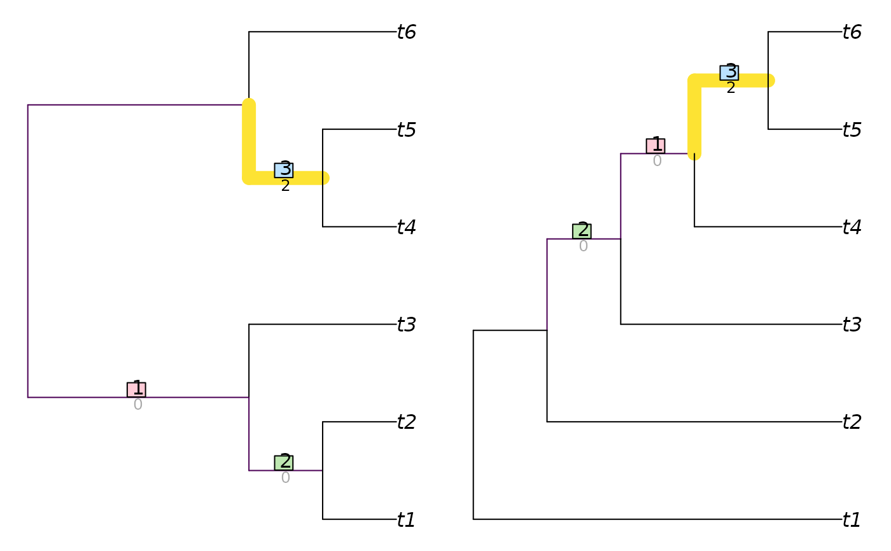

Calculate the Matching Split Distance (Bogdanowicz and Giaro 2012; Lin et al. 2012) for unrooted binary trees.
MatchingSplitDistance(
tree1,
tree2 = NULL,
normalize = FALSE,
reportMatching = FALSE
)
MatchingSplitDistanceSplits(
splits1,
splits2,
nTip = attr(splits1, "nTip"),
normalize = TRUE,
reportMatching = FALSE
)Trees of class phylo, with leaves labelled identically,
or lists of such trees to undergo pairwise comparison. Where implemented,
tree2 = NULL will compute distances between each pair of trees in the list
tree1 using a fast algorithm based on Day (1985).
If a numeric value is provided, this will be used as a
maximum value against which to rescale results.
If TRUE, results will be rescaled against a maximum value calculated from
the specified tree sizes and topology, as specified in the "Normalization"
section below.
If FALSE, results will not be rescaled.
Logical specifying whether to return the clade matchings as an attribute of the score.
Logical matrices where each row corresponds to a leaf,
either listed in the same order or bearing identical names (in any sequence),
and each column corresponds to a split, such that each leaf is identified as
a member of the ingroup (TRUE) or outgroup (FALSE) of the respective
split.
(Optional) Integer specifying the number of leaves in each split.
MatchingSplitDistance() returns an array of numerics providing the
distances between each pair of trees in tree1 and tree2,
or splits1 and splits2.
A normalization value or function must be provided in order to return a normalized value. If you are aware of a generalised formula, please let me know by creating a GitHub issue so that it can be implemented.
Bogdanowicz D, Giaro K (2012).
“Matching split distance for unrooted binary phylogenetic trees.”
IEEE/ACM Transactions on Computational Biology and Bioinformatics, 9(1), 150--160.
doi:10.1109/TCBB.2011.48
.
Lin Y, Rajan V, Moret BME (2012).
“A metric for phylogenetic trees based on matching.”
IEEE/ACM Transactions on Computational Biology and Bioinformatics, 4(9), 1014--1022.
doi:10.1109/TCBB.2011.157
.
Other tree distances:
JaccardRobinsonFoulds(),
KendallColijn(),
MASTSize(),
NNIDist(),
NyeSimilarity(),
PathDist(),
Robinson-Foulds,
SPRDist(),
TreeDistance()
MatchingSplitDistance(lapply(rep(8, 5), ape::rtree), normalize = 16)
#> 1 2 3 4
#> 2 0.7500
#> 3 0.8125 0.6875
#> 4 0.7500 0.7500 0.8125
#> 5 0.3750 0.7500 0.5625 0.8750
MatchingSplitDistance(TreeTools::BalancedTree(6),
TreeTools::PectinateTree(6),
reportMatching = TRUE)
#> [1] 2
#> attr(,"matching")
#> [1] 2 1 3
#> attr(,"pairScores")
#> [,1] [,2] [,3]
#> [1,] 1 0 1
#> [2,] 0 1 2
#> [3,] 2 1 2
#> attr(,"matchedSplits")
#> [1] "t1 t2 t3 | t4 t5 t6 => t4 t5 t6 | t1 t2 t3"
#> [2] "t1 t2 | t3 t4 t5 t6 => t3 t4 t5 t6 | t1 t2"
#> [3] "t4 t5 | t1 t2 t3 t6 => t5 t6 | t1 t2 t3 t4"
VisualizeMatching(MatchingSplitDistance, TreeTools::BalancedTree(6),
TreeTools::PectinateTree(6))
